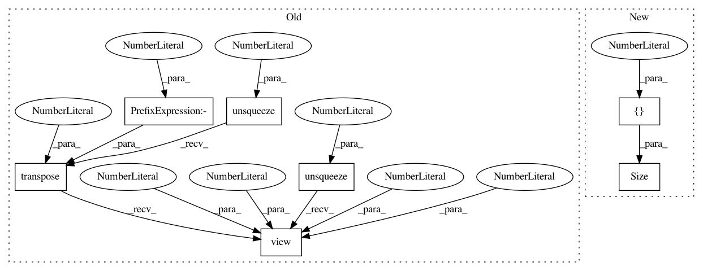

0f8802fba8f55cd66300017fdf9b7189183ff9d5,test/kernels/test_scale_kernel.py,TestScaleKernel,test_ard_batch,#TestScaleKernel#,44
Before Change
self.assertLess(torch.norm(res - actual), 1e-5)
// batch_dims
double_batch_a = scaled_a.unsqueeze(0).transpose(0, -1)
double_batch_b = scaled_b.unsqueeze(0).transpose(0, -1)
actual = double_batch_a.transpose(-1, -2).unsqueeze(-1) - double_batch_b.transpose(-1, -2).unsqueeze(-2)
actual = actual.pow(2).mul_(-0.5).exp().view(3, 2, 2, 2)
actual[:, 1, :, :].mul_(2)
res = kernel(a, b, batch_dims=(0, 2)).evaluate()
self.assertLess(torch.norm(res - actual), 1e-5)
After Change
base_kernel = RBFKernel(batch_shape=torch.Size([2]), ard_num_dims=3)
base_kernel.initialize(lengthscale=lengthscales)
kernel = ScaleKernel(base_kernel, batch_shape=torch.Size([2]))
kernel.initialize(outputscale=torch.tensor([1, 2], dtype=torch.float))
kernel.eval()
In pattern: SUPERPATTERN
Frequency: 4
Non-data size: 7
Instances
Project Name: cornellius-gp/gpytorch
Commit Name: 0f8802fba8f55cd66300017fdf9b7189183ff9d5
Time: 2019-04-12
Author: gpleiss@gmail.com
File Name: test/kernels/test_scale_kernel.py
Class Name: TestScaleKernel
Method Name: test_ard_batch
Project Name: cornellius-gp/gpytorch
Commit Name: b821df469dbf44ab1f1f3564c454eb2787cd412b
Time: 2019-04-11
Author: gpleiss@gmail.com
File Name: test/kernels/test_scale_kernel.py
Class Name: TestScaleKernel
Method Name: test_ard_batch
Project Name: cornellius-gp/gpytorch
Commit Name: 0f8802fba8f55cd66300017fdf9b7189183ff9d5
Time: 2019-04-12
Author: gpleiss@gmail.com
File Name: test/kernels/test_rbf_kernel.py
Class Name: TestRBFKernel
Method Name: test_ard_batch
Project Name: cornellius-gp/gpytorch
Commit Name: b821df469dbf44ab1f1f3564c454eb2787cd412b
Time: 2019-04-11
Author: gpleiss@gmail.com
File Name: test/kernels/test_rbf_kernel.py
Class Name: TestRBFKernel
Method Name: test_ard_batch